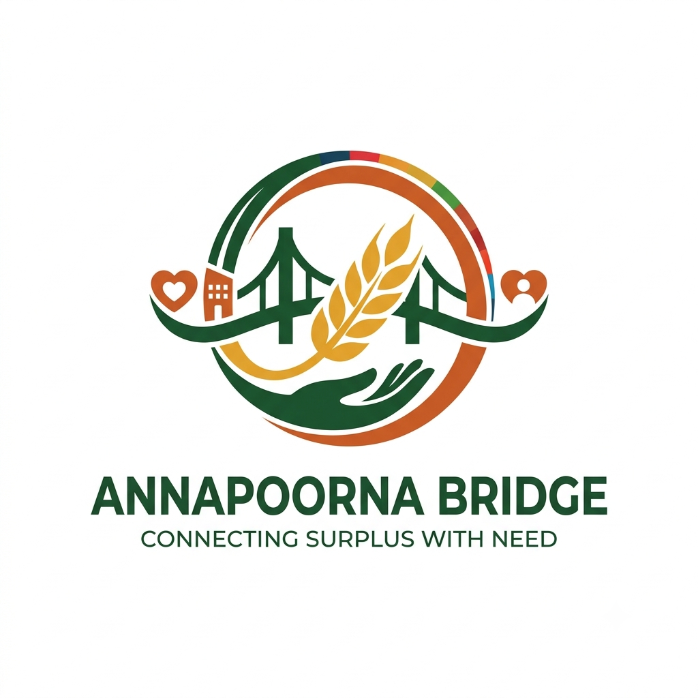

We would like to express our sincere gratitude to our internal faculty guide, Prof. Nidhi Shah, for continuous guidance, encouragement, and valuable technical feedback throughout this Problem-Based Learning (PBL) activity in the Web Application Development course.
We also extend our thanks to the Department of Computer Engineering, SVIT Vasad, and Gujarat Technological University for providing us this opportunity to engineer web development solutions addressing a critical humanitarian and sustainability challenge.
Annapoorna Bridge is a full-stack, real-time web application engineered to bridge the critical gap between commercial surplus food generators (marriage banquet halls, convention centers, hostels, and caterers) and verified food-relief NGOs (community kitchens, shelter homes, and charities) in India before food reaches microbial expiration.
Operating on the statutory FSSAI 4-hour golden window, the platform incorporates JWT authentication, role-based access control (RBAC), real-time WebSocket feeds (Socket.io), dynamic perishable countdown timers, atomic concurrency-safe claims, automated pickup dispatch slips with 6-digit verification codes, and an automated UN SDG impact calculation engine (measuring meals served and CO₂ emissions avoided).
The platform features an Express.js and Node.js RESTful API, MongoDB persistence, and an accessible frontend, deployed serverlessly on Vercel with zero downtime.
In India, an estimated 68 million tonnes of food is wasted annually, with large-scale marriage banquets and institutional hostels generating massive quantities of high-nutrition cooked surplus. Concurrently, millions of underprivileged citizens experience chronic hunger. The fundamental failure is not food scarcity, but the absence of a time-critical, hygienic logistical pipeline.
Annapoorna Bridge addresses this gap by implementing advanced web technologies: modular RESTful architectures, WebSocket event streaming, atomic concurrency handlers, role-based workflows, and FSSAI temperature-holding compliance to facilitate safe, transparent food recovery.
Design and implement a production-ready, full-stack web application that allows verified food donors (banquet managers, hostel admins) to list hot perishable surplus food, and enables accredited NGOs to discover and atomically claim it within strict safe consumption windows while measuring SDG metrics.
| UN SDG / Target | How Annapoorna Bridge Contributes |
|---|---|
| SDG 2: Zero Hunger (Target 2.1 – Universal access to safe food) |
Redirects hot, nutritious surplus meals from high-volume banquets directly to community kitchens and shelters within the safe consumption window. |
| SDG 11: Sustainable Cities (Target 11.6 – Reduce urban environmental impact) |
Reduces municipal solid organic waste going to urban dumpsites, promoting circular food redistribution in Tier-1 and Tier-2 Indian cities. |
| SDG 12: Responsible Consumption (Target 12.3 – Halve global per capita food waste) |
Incentivizes commercial hospitality venues to maintain zero edible waste through statutory audit trails and transparent donor recognitions. |
| SDG 13: Climate Action (Indirect mitigation) |
Prevents anaerobic decomposition of organic food in landfills, mitigating methane and greenhouse gas emissions (~2.5 kg CO₂e saved per kg food rescued). |
The platform implements a decoupled, modern three-tier web architecture: Presentation Layer (Responsive HTML5/CSS3/Vanilla ES6+ SPA) ➔ Application Layer (Node.js + Express.js REST API with Socket.io real-time streaming) ➔ Persistence Layer (MongoDB Atlas with Mongoose ODM & transactional audit logs).
| Layer | Technology | Design Rationale |
|---|---|---|
| Frontend | HTML5, CSS3, Tailwind CSS CDN, Vanilla ES6+ JS | Ultra-lightweight, zero bundle-build latency, instant performance on mobile devices. |
| Backend | Node.js (v24), Express.js (v5) | High-throughput asynchronous I/O, RESTful routing, robust error middleware. |
| Real-Time | Socket.io & Web Audio API | Bidirectional event broadcasting for instant alert feeds and audio chimes. |
| Database | MongoDB + Mongoose ODM | Flexible document schema for varied food payloads; atomic findOneAndUpdate. |
| Authentication | JWT, bcryptjs, RBAC Middleware | Stateless authentication tokens with role validation (Donor, NGO, Admin). |
| Deployment | Vercel (Serverless Functions & Edge CDN) | Global edge caching for assets; auto-scaling serverless API endpoints. |
id, name, email, passwordHash, role (donor | ngo | admin), orgName, city, address, licenseOrDarpanId, isVerified.id, donorId, foodTitle, foodType, dietaryType (veg | non-veg), quantityValue, quantityUnit, cookedTime, safeUntil, storageCondition, pickupAddress, status (available | claimed | in_transit | delivered | expired), claimedBy, volunteerDetails, pickupVerificationCode.id, action, listingId, userId, details, createdAt.| Method | Endpoint | Access | Functional Purpose |
|---|---|---|---|
POST |
/api/auth/register |
Public | Register donor/NGO with license or Darpan ID. |
POST |
/api/auth/login |
Public | Authenticate user and return JWT bearer token. |
GET |
/api/listings |
Public/Auth | Search & filter active surplus alerts by city, diet, urgency. |
POST |
/api/listings |
Donor | Publish new surplus batch with safety acknowledgment. |
POST |
/api/listings/:id/claim |
NGO | Atomic claim, assign volunteer & generate dispatch slip. |
PATCH |
/api/listings/:id/status |
NGO/Donor | Advance status to in_transit or delivered. |
GET |
/api/analytics/impact |
Public | Calculate live SDG 2 & 11 metrics and city distributions. |
PATCH |
/api/admin/users/:id/verify |
Admin | Approve or revoke partner verification credentials. |
FoodListing.findOneAndUpdate({ _id, status: 'available', safeUntil: { $gt: now } }, { $set: { status: 'claimed' } }). Competing requests receive HTTP 409 Conflict.AB-8419) required upon physical pickup to verify relief volunteer identity.Meals Delivered = Sum of portions (where 1 kg cooked food ≈ 2.5 standard meal portions).Food Rescued (kg) = Total mass diverted from municipal waste.CO₂e Avoided (kg) = Rescued kg × 2.5 (Based on UNEP/FAO organic degradation models).| # | Test Scenario | Expected System Behavior | Status |
|---|---|---|---|
| 1 | Donor registers with duplicate email | HTTP 400 with duplicate email message | Pass |
| 2 | NGO attempts to submit surplus food post | HTTP 403 Forbidden (RBAC blocks non-donor) | Pass |
| 3 | Donor posts batch without safety checkbox | HTTP 400: Mandatory safety checklist error | Pass |
| 4 | Two NGOs simultaneously claim the same batch | 1st succeeds (200), 2nd receives 409 Conflict | Pass |
| 5 | Listing safeUntil threshold passes | Status changes to Expired; hidden from active feed | Pass |
| 6 | Filter feed by city (e.g. Chennai) & Veg | Only matching items returned by API | Pass |
| 7 | Volunteer updates transit status to in_transit | Socket event broadcasts; donor dashboard updates | Pass |
| 8 | Admin approves pending NGO Darpan ID | Partner verification badge activates across UI | Pass |
| Technical / Operational Challenge | Engineered Solution in Annapoorna Bridge |
|---|---|
| Rapid Food Spoilage | Dynamic perishable countdown timers, <2h urgent tags, and FSSAI temperature holding guides. |
| Concurrent Claim Conflicts | Atomic database find-and-modify queries ensuring zero double-allocations under high concurrency. |
| Trust & Credibility | Mandatory FSSAI licenses and NGO Darpan IDs verified via an integrated administrative panel. |
| Misplaced Pickups | Generated printable pickup dispatch slips paired with 6-digit handover verification codes. |
| Deployment in Serverless Clouds | Cached Mongoose database connection pooling and automatic fallback mechanisms for Vercel. |
Annapoorna Bridge demonstrates how modern full-stack web engineering directly solves complex socio-environmental problems. By integrating RESTful API principles, role-based access control, WebSocket alerts, atomic transaction safety, and statutory FSSAI compliance, the platform transforms surplus food from a waste liability into a life-saving community asset.
The platform successfully bridges surplus with need, providing a scalable, transparent blueprint for zero-hunger initiatives under UN SDG 2 and sustainable, waste-resilient cities under UN SDG 11.